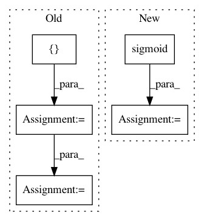

17aafdea24122bbb777f71a8ea7c2505e3fee84c,torch_geometric/nn/models/autoencoder.py,GAE,reconstruction_loss,#GAE#Any#Any#Any#,71
Before Change
y = torch.cat([pos_y, neg_y], dim=0)
pred = torch.cat([adj[row, col], adj[neg_adj_mask]], dim=0)
pos_weight = torch.tensor([neg_y.size(0) / pos_y.size(0)])
pos_weight = pos_weight.to(adj.device)
self.loss_op = torch.nn.BCEWithLogitsLoss(pos_weight=pos_weight)
return self.loss_op(pred, y)
def eval(self, adj, edge_index, neg_edge_index):
After Change
def reconstruction_loss(self, adj, edge_index, neg_adj_mask):
row, col = edge_index
loss = -torch.log(torch.sigmoid(adj[row, col])).mean()
loss = loss - torch.log(1 - torch.sigmoid(adj[neg_adj_mask])).mean()
return loss
def eval(self, adj, edge_index, neg_edge_index):
pos_y = adj.new_ones(edge_index.size(1))
In pattern: SUPERPATTERN
Frequency: 3
Non-data size: 5
Instances
Project Name: rusty1s/pytorch_geometric
Commit Name: 17aafdea24122bbb777f71a8ea7c2505e3fee84c
Time: 2019-03-15
Author: matthias.fey@tu-dortmund.de
File Name: torch_geometric/nn/models/autoencoder.py
Class Name: GAE
Method Name: reconstruction_loss
Project Name: tensorflow/ranking
Commit Name: 6bf3f51cd0a312da842157665663c2dad9983248
Time: 2021-01-29
Author: xuanhui@google.com
File Name: tensorflow_ranking/python/losses_impl.py
Class Name: ClickEMLoss
Method Name: _compute_latent_prob
Project Name: IndicoDataSolutions/finetune
Commit Name: 04573605a3bef45d29d81302bce154f220bbd7f5
Time: 2019-01-15
Author: matthew.bayer@indico.io
File Name: finetune/network_modules.py
Class Name:
Method Name: ordinal_regressor